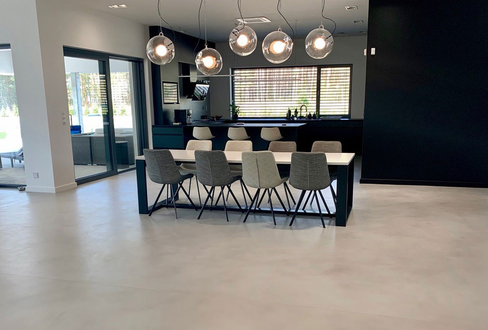
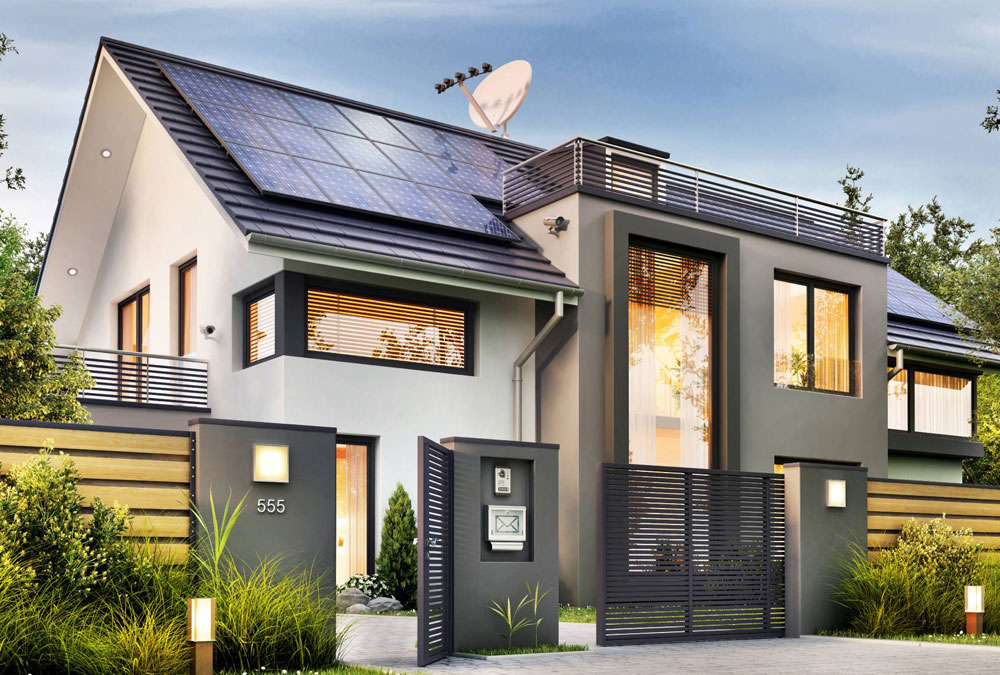

Novedades
Qué es el microcemento y cómo se aplica
EL MICROCEMENTO ES UN REVESTIMIENTO DECORATIVO CONTINUO QUE SE APLICA SOBRE SUPERFICIES HORIZONTALES Y VERTICALES, TANTO EN INTERIORES COMO EN EXTERIORES. SE COMPONE DE UNA MEZCLA DE CEMENTO, RESINAS Y ADITIVOS, Y SE CARACTERIZA POR SER MUY FINO Y TENER UN ACABADO LISO Y UNIFORME.
La aplicación del microcemento se realiza en varias capas, cada una de ellas con un espesor máximo de 2-3 mm. La superficie sobre la que se va a aplicar debe estar limpia, seca y libre de polvo, grasa y restos de otros materiales. Si se trata de una superficie ya existente, esta debe estar preparada con una imprimación específica para el microcemento. La aplicación del microcemento se realiza en varias capas, cada una de ellas con un espesor máximo de 2-3 mm. La superficie sobre la que se va a aplicar debe estar limpia, seca y libre de polvo, grasa y restos de otros materiales. Si se trata de una superficie ya existente, esta debe estar preparada con una imprimación específica para el microcemento. Es ideal para cubrir superficies, entre otras, de hormigón, cemento, azulejos, baldosas, yeso, pladur, metal, plástico, gres, mármol, y un largo etc. Usos principales suelen ser en paredes y suelos, ya que aporta continuidad creando una mayor sensación de amplitud. Su adherencia a todas las superficies hace que el sistema microcemento sea ideal también para baños y cocinas, donde no habrá que retirar los antiguos azulejos, puesto que la colocación puede realizarse por encima. Otro de los usos principales es en el mobiliario de exteriores, gracias a la estética decorativa de su acabado y a su excelente durabilidad.
¿Qué son las casas sustentables?
LAS CASAS SUSTENTABLES SE ENMARCAN DENTRO DE UN NUEVO CONCEPTO FILOSÓFICO DE LA ARQUITECTURA COMO UN MOTOR DE IMPULSO EN LA CONSERVACIÓN DEL PLANETA. ESTOS DISEÑOS DE CASAS SUSTENTABLES HAN DEMOSTRADO QUE NO TIENEN PORQUÉ SACRIFICAR EL CONFORT EN PRO DE LA ECOLOGÍA.
Los arquitectos de casas sustentables han tenido el inmenso reto de diseñar y construir edificaciones cómodas, placenteras y prácticas para sus habitantes. Pero, al mismo tiempo, han desarrollado soluciones que optimizan el uso responsable de los recursos.
El sistema de derroche en función a la estética y sin cuidado del medio ambiente, poco a poco va quedando atrás y va dando paso a nuevas REALIDADES ARQUITECTÓNICAS. Su instrumento más tangible son las casas sustentables, una solución eficaz, eficiente y práctica.
Pero, para que las casas sustentables puedan ser llevadas del plano a la realidad, los arquitectos y constructores han tenido que adoptar nuevas técnicas y recursos. El uso de materiales sustentables y la incorporación de nuevas visiones, han sido muy útiles.
La perfección del uso de los recursos, el ahorro y la maximización de la energía, así como la reducción del DESPILFARRO, son nuevos paradigmas de la arquitectura.
Del mismo modo, veremos como paulatinamente en América Latina, este concepto ha ido ganando terreno para ir desplazando a los viejos sistemas constructivos. Los avances de este tipo de casas en México, Argentina, Chile o Colombia, son ejemplos de admirar.